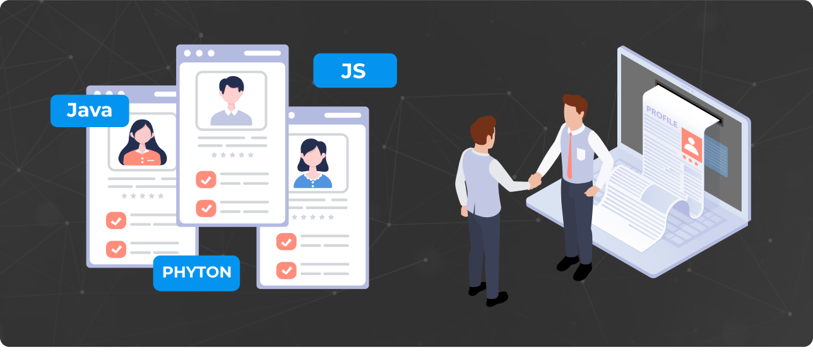

Strategies For Hiring AI Engineers

I. Introduction
The role of Artificial Intelligence (AI) engineers has become increasingly critical in today's rapidly evolving digital landscape. As technology advances, businesses and organizations across industries have grown more reliant on AI to optimize their operations, make data-driven decisions, and innovate their services or products. This increasing demand has catapulted AI engineering as one of the most sought-after professions. From designing AI models to implementing machine learning algorithms, AI engineers are at the forefront of technological revolution.
However, hiring AI engineers presents unique challenges that are not encountered in other fields. The field is highly specialized, requiring a blend of advanced skills in mathematics, programming, and data science, alongside a strong understanding of AI principles and concepts. The rapid pace of AI development also necessitates continual learning and adaptability to stay at the cutting edge of the field. Furthermore, as AI technologies raise ethical and privacy concerns, potential candidates need to demonstrate an understanding of these issues, beyond technical expertise. Consequently, the recruitment process for AI engineers often demands more rigorous screening and a more thorough evaluation of skills and ethical awareness.
A case in point is the successful AI hiring story from the tech giant, Google. Recognizing the need for robust AI expertise, Google employed a strategic approach to recruit the best talents. The company emphasizes a thorough understanding of core AI concepts during their hiring process, and does not solely rely on formal education or qualifications. Prospective candidates are evaluated on their problem-solving abilities, their understanding of machine learning principles, and their demonstrated ability to apply these principles to real-world scenarios. This approach has enabled Google to assemble a team of world-class AI engineers, contributing to their leadership position in AI development. This successful hiring strategy underlines the importance of a comprehensive and nuanced approach in the recruitment of AI engineers, recognizing the multifaceted nature of the skills and knowledge required.
II. Deciphering the Role of AI Engineers
Artificial Intelligence (AI) is a branch of computer science that focuses on creating machines capable of thinking and learning like humans. This transformative technology has found applications in a wide range of industries, from healthcare to finance, and from manufacturing to retail. In healthcare, for instance, AI is used in diagnosing diseases and predicting health risks. In finance, AI aids in fraud detection and personalized banking services. Similarly, in retail, AI is used for personalizing customer experience and managing inventory, to mention a few.
An AI engineer is the professional behind the successful integration of AI into these diverse sectors. Their job primarily involves designing, developing, and maintaining AI systems. They are tasked with creating machine learning models, developing predictive models, and applying data science techniques to complex data sets. They may also work on speech recognition, visual perception, and language understanding technologies, all under the broad umbrella of AI. An AI engineer from Amazon, for instance, might be responsible for improving the company's recommendation system, thereby enhancing the online shopping experience for millions of users worldwide.
The role of an AI engineer requires a unique set of skills and qualifications. A strong background in mathematics and programming is essential, typically involving expertise in languages like Python, Java, or C++. Familiarity with AI-related frameworks and libraries like TensorFlow or PyTorch is also crucial. On top of that, a deep understanding of machine learning algorithms, neural networks, and deep learning are also key. AI engineers should also possess problem-solving skills, critical thinking, and a good grasp of data analysis and manipulation. Taking the example of a Facebook AI engineer, they need to handle vast amounts of data and develop algorithms to improve the platform's ability to identify and remove harmful content. This calls for not just technical proficiency but also a keen ethical awareness and a sense of responsibility. Thus, hiring AI engineers involves recognizing and valuing this complex interplay of skills.
III. Identifying Your Specific AI Needs
Incorporating artificial intelligence into your business requires a deep understanding of your company's unique needs. One effective way to identify these needs is by using the 'Jobs to be Done' framework. This method emphasizes focusing on the task that needs to be completed, rather than the specific tool or solution. This approach can be particularly beneficial when thinking about AI, as it helps you pinpoint the exact processes and tasks where AI could bring about efficiency and innovation.
For example, if a critical 'job to be done' in your business is analyzing large volumes of data to extract insights, an AI engineer proficient in machine learning algorithms might be needed. Alternatively, if your company needs to streamline customer service operations, an AI engineer with experience in developing chatbots could be the ideal fit. Essentially, the first step towards hiring an AI engineer should be mapping out your business processes, identifying the jobs to be done, and then understanding how AI could help perform these tasks more efficiently.
Lastly, it's important to understand the nuances between different roles within the AI field. Not all AI professionals have the same skills or focus areas. An AI engineer typically focuses on designing and implementing AI models, while a Machine Learning engineer may specialize in programming machines to perform specific tasks. Data scientists, on the other hand, often concentrate on interpreting and analyzing complex data sets. Recognizing these distinctions is crucial in ensuring you hire the right professional for the jobs that need to be done in your organization.
IV. Strategies to Source AI Engineers
After identifying your specific AI needs, the next step is finding the right professionals to fill these roles. One effective strategy to source AI engineers is through job boards and platforms dedicated to tech recruitment. Sites like LinkedIn, Glassdoor, AngelList, and StackOverflow are frequented by AI professionals, making them excellent resources for finding talent. Similarly, platforms such as Kaggle, GitHub, or AI-specific job boards like AI-Jobs.net can provide a pool of candidates who are passionate about AI and up-to-date with current developments in the field. Crafting an attractive and clear job description that outlines the specific skills you're looking for can help draw in the right candidates.
Networking plays a crucial role in sourcing AI engineers. Joining AI communities, participating in online forums, and attending industry events can provide opportunities to meet potential candidates and learn more about the latest trends and advancements in the field. A success story here is that of OpenAI, a leading AI research lab. The organization has often cited community engagement and networking as a vital part of its recruitment strategy, helping them attract some of the world's top AI talent.
V. Structuring the Hiring Process for AI Engineers
A key to successful hiring is crafting a compelling job description. Your job description should detail the roles and responsibilities of the AI engineer, as well as the necessary qualifications and experience. For instance, tech giant Google's job postings for AI roles highlight their dedication to "using AI to solve complex problems" and often seek candidates proficient in Python, Java, or C++ and familiar with AI/ML frameworks. A well-crafted job description helps attract qualified candidates who are genuinely interested in the role.
The next phase is screening and shortlisting candidates based on their qualifications, experience, and potential. This can be achieved by reviewing resumes for relevant academic qualifications or certifications, such as a degree in computer science or a certificate in AI programming. You can also look for experience with specific tools and technologies pertinent to your business needs, such as TensorFlow or PyTorch. Evaluating potential involves considering candidates' problem-solving abilities, innovative thinking, and capacity to learn new technologies or concepts.
The subsequent step is conducting a comprehensive technical interview. This could include tasks to test the candidate's knowledge in areas like data structures and algorithms, system design, and AI-specific tasks. For instance, a task could involve developing a basic machine learning model or designing a system that utilizes AI to solve a specific problem. Alongside these tasks, questions could explore their past projects, methodologies, and their approach to overcoming challenges. Amazon, for example, includes both coding challenges and AI-specific tasks in their interview process, allowing them to evaluate a candidate's technical prowess and innovative thinking.
Lastly, it's crucial to evaluate a cultural fit. Does the candidate share your company's values, work ethic, and long-term vision? Are they able to work well with others, especially in roles that require significant collaboration? Use the interview as an opportunity to explore these aspects. Major companies like Facebook place a strong emphasis on cultural fit, understanding that an employee who aligns with their culture not only contributes to a more harmonious work environment but is also more likely to stay with the organization long-term.
VI. Ensuring Retention of AI Engineers
Retaining your AI engineers is equally as important as hiring them. A positive and inspiring work environment is essential to maintain high levels of employee satisfaction and motivation. Top tech companies like Google and Facebook are famous for their dynamic work environments, which include creative workspaces, flexible work policies, and a culture of openness and innovation. These companies also place a strong emphasis on collaboration and mutual respect, ensuring their AI engineers feel valued and part of a larger mission.
AI is a rapidly evolving field, so providing opportunities for continuous learning and growth is critical. This could be in the form of training programs, workshops, or resources for further study. Encourage engineers to attend industry conferences or take part in relevant webinars and online courses. For example, Microsoft has a dedicated AI School that offers a range of courses and resources for their engineers, thereby enabling them to stay at the forefront of AI developments. This not only equips your team with the latest knowledge and skills but also shows your commitment to their personal and professional growth.
Lastly, providing competitive compensation and benefits is crucial in attracting and retaining top AI talent. This doesn't just mean a high salary, but also comprehensive health benefits, flexible work arrangements, and meaningful perks. For instance, Netflix offers its employees a flexible vacation policy and the ability to choose the amount of their cash vs. stock compensation, making it an attractive place for AI engineers. Remember, the goal is to create a package that not only meets industry standards but also reflects the value your company places on its employees and their well-being.
VII. Conclusion
Navigating the fast-moving world of AI innovation requires a strategic approach to recruiting AI engineers. The high-stakes tech arena tolerates no delays. It's not just about filling an open role, but rather a holistic endeavor to pinpoint your firm's unique AI needs and craft a targeted plan for attracting, hiring, and retaining exceptional AI talent. This process becomes the key to unlocking potential transformative impacts on your business trajectory.
Investing the necessary time and energy into each stage of the hiring process, from articulating captivating job descriptions to crafting robust technical interviews and evaluating culture fit, is paramount. Equally crucial is devising the optimal retention strategy—encompassing an engaging work environment, avenues for advancement, and competitive remuneration.
That's where Neural Leap comes in. We don't just provide a service, we partner with you, reshaping your hiring strategies and simplifying the recruitment process. We help you secure the elite AI talent needed to drive your business growth.
Don't let recruitment challenges slow you down. Book a call with us today, and together, let's shape your future in an AI-dominated landscape.